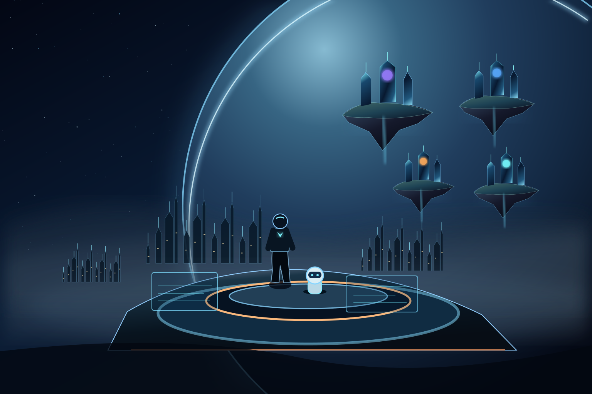

Featured Projects View all →

Staff Engineer · AI Builder · Author · Mentor
Building a more
Intelligent Tomorrow
Staff Engineer specializing in identity security, distributed architecture and resilient platforms. I also build KUPPA AI, Vayu and KuppaForge—and write systems books, poetry and fiction.
KUPPA AIPersonal intelligence with a human-centered vision
VAYULearning, reflection and evolving intelligence
KUPPAFORGEBuilding stronger engineers
SYSTEM DESIGNSystems that scale in the real world
Technology powers ideas.
People make them real.
People make them real.
EXPEDITION 01 / The future is a world we build
PRAMOD KUPPA / 2026ENGINEER · CREATOR · WRITER
♙
7+Years engineering
⬡
5K+Learners mentored
▤
4System design books
∞
AlwaysIdeas in progress
“Technology should amplify human potential.”— Pramod
Books & Writing View all →
SYSTEM
DESIGNVOL 1A
DESIGNVOL 1A
SYSTEM
DESIGNVOL 2A
DESIGNVOL 2A
IN MEPOETRY
Four System Design books, the IN ME poetry collection and the RADHA novel.
Experience View all →
2026 — PRESENTInfor · Staff EngineerIdentity, MFA, STS and enterprise authentication
PREVIOUSLYCapgemini / TransUnionLead-level backend engineering and delivery
EDUCATION & COMMUNITYAlgomaster · 5QsContributing to DSA, system design and interview learning
Technical Expertise View all →
JavaSystem DesignDistributedAI Systems
01 / THE PERSON
01 / The visionIdeas. Systems.
Ideas. Systems.
Real-world impact.
I'm Pramod Kuppa, a backend engineer, builder, author and mentor. I work on enterprise Identity & Access Management at Infor, following years of engineering large-scale financial and banking systems. Away from work, I build learning platforms, create AI experiments, write books and mentor engineers.
I believe tomorrow should be more intelligent, more useful and more human.
02 / THE WORLDS
02 / Engineering, AI & learning worldsThe things I'm building.
Personal intelligence, hands-on engineering education, and distributed-systems reference architectures—all connected by a drive to make difficult ideas understandable.
KUPPA AI
The human-facing heart of an ambitious personal AI agent platform, integrating long-term memory, tools, scheduled workflows and contextual assistance.
Vayu
The reasoning and orchestration brain of KUPPA AI: reflection, knowledge evolution, RAG and agent services.
KuppaForge
A full-stack learning environment for HLD, LLD, DSA, Operating Systems and Computer Networks, with progress tracking, daily contests and dashboards.
Visit KuppaForge ↗Systems Lab
Reference designs for rate limiting, notifications, payments, chat, feeds, URL shorteners and other real-world distributed systems.
Explore GitHub ↗03 / THE IMPACT
03 / Giving knowledge backCommunities, code and contributions.
I've mentored more than 5,000 learners and contributed to making interview preparation and systems thinking more structured and practical.
A
Algomaster
Founding engineering and learning contributions spanning backend architecture, DSA and System Design tracks, AI-assisted learning, practical case studies and learner mentorship.
Open-source: Two Pointers and Sliding Window test-case datasets contributed to the AlgoMaster DSA test-case repository.
View code contribution ↗5Q
5Qs
Contributions to a pattern-first DSA and system-design learning community: curated interview problems, reusable explanations, case studies and contributor quality practices.
Focus: make complex engineering concepts approachable, reviewable and useful for real interviews.
⌘
GitHub & Open Engineering
Code and architectural experiments across Java, microservices, concurrency, system design and learning tools.
Browse repositories, public contributions and work-in-progress engineering experiments.
Explore GitHub ↗04 / THE ARCHITECT
04 / Professional experienceEngineering that operates at scale.
INFOR · SEP 2026 — PRESENT
Staff Engineer · Identity & Access Management
Architectural leadership for enterprise authentication: MFA enablement, STS infrastructure, federated identity, secure-by-design patterns and certificate lifecycle automation.
MFAOAuth2 / OIDCSTSSSOSecurity
Capgemini · TransUnion
Team Lead, Backend Architecture. Billion-record Spring Batch workloads, Java 17, Kafka, Spring WebFlux, gRPC, event-driven pipelines, rate limiting and resilience. Reduced batch runtimes by 40% and production failures by 30%.
NeoSoft · Union Bank
Designed multi-level government approval workflows with role-based permissions, SHA-256 chained audit trails and concurrency safeguards.
Wipro · Sony Ericsson
Built Kafka-driven microservices, Saga coordination, observability and service resilience for enterprise systems.
Cognizant · KeyBank
Built transaction-heavy Java and Spring banking APIs, improved SQL performance and supported critical production systems.
Mentor & Technical Author
5,000+ learners mentored; systems design writing, engineering education and knowledge sharing through Algomaster, 5Qs and KuppaForge.
EmoCapture
Co-created a 2017 research paper combining Computer Vision and NLP inference pipelines.
05 / THE AUTHOR
05 / Books & storytellingFour systems books. Two creative worlds.
I write technical books to make architecture understandable, and creative work to explore what engineering cannot always express.
SYSTEM DESIGN1APRAMOD KUPPA
System Design · Volume 1A
System design foundations, written with a story-driven teaching approach.
SYSTEM DESIGN1BPRAMOD KUPPA
System Design · Volume 1B
The companion part of the Volume 1 learning journey.
SYSTEM DESIGN2APRAMOD KUPPA
System Design · Volume 2A
Case studies and practical architectural decisions.
SYSTEM DESIGN2BPRAMOD KUPPA
System Design · Volume 2B
Further case studies and distributed-systems depth.
IN ME
Poems about loss, hope, memory, identity and the quiet emotions people rarely say aloud. A deeply personal collection arranged around Wound, Empty Room, Mirror, Letting Go and Light.
Every night, hope leaves a candle beside the window.
RADHA
The Story of One Promise. An expansive speculative novel of destiny, sacrifice, ancient mysteries and a promise that refuses to die.
One promise. A world that will never be the same.
The four System Design titles represent Volume 1A, 1B, 2A and 2B. Availability and publishing status may vary.
06 / THE TOOLKIT
06 / Technical expertiseDepth, breadth and engineering judgment.
Languages & backend
Java 17+PythonSQLC++Spring BootSpring WebFluxSpring BatchSpring CloudgRPC
Architecture & reliability
MicroservicesDomain-Driven DesignCQRSSagaEvent-Driven ArchitectureKafkaIdempotencyCircuit BreakersRate LimitingConcurrency
Security & identity
Identity & Access ManagementMFASTSOAuth2 / OIDCSAMLJWTSSORBAC
Infrastructure & data
AWSAzureDockerKubernetesRedisPostgreSQLMySQLElasticSearchApache AirflowPrometheusGrafanaCloudWatch
07 / THE NEXT CHAPTER
06 / The next frontierLet's build something extraordinary.
Interested in systems architecture, AI, mentorship or books? Let’s connect and build what matters.